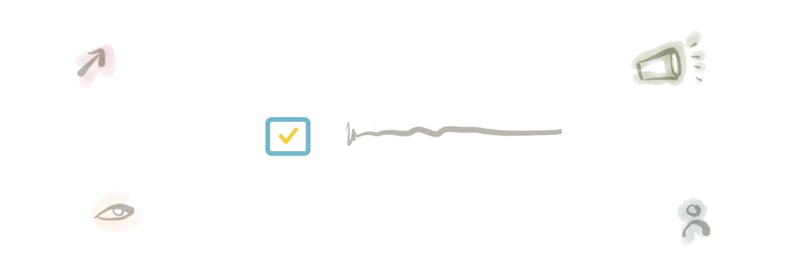

Leadership resolutionsI believe that managing others is a big responsibility. One that could make or break their experience at a company, or even their careers. With that in mind I try to do my best, to put the time and the effort to support the team and constantly question whether I’m having a positive or negative impact.
So I created this list of things I aspire to do, a list to keep myself in check, to not repeat the mistakes of the past, the things I have suffered and things I’ve made others endure. My list of resolutions to continuously challenge myself, help my team’s professional development and avoid screwing up.
01 Think Big and act Lean
One effective thing you can do as a “lead” is set big ambitious goals. But in order to keep everyone engaged on the goal you also have to show progress and keep momentum. Break those big goals into smaller short-term milestones that allow you to see the steps you are taking towards the big picture, keep track of progress, celebrating small victories.
02 Distrust the process
See process as a way to enable great design, a common language and set the right expectations. But be ready to challenge the process, instill trust and empower your team to change it when it doesn’t make sense, enabling the flexibility to react to change.
03 Be honest not an asshole
You have the responsibility to be honest and tell your team what they are doing wrong, it’s the only way they will be able to fix it. But there is a big difference between being honest and being an asshole. Separate the person from the work, articulate your feedback in a way that is actionable and provide challenges instead of tasks.
04 Show instead of tell
The best way to help others understand what you want more of, is to show them. Highlight what “good” looks like, give timely feedback that reinforces the right attitudes and use artifacts that help everyone be on the same page.
05 Help others find their own answers
You don’t have to have all the answers, and even if you do, you should try to refrain and ask questions. People learn more when they find their own answers. It’s not the most efficient way, but it will be the most powerful way to empower your team and help them grow.
06 Consider the person before the work
When things are not going as expected try to see the person before the work. There could be other factors affecting the person and impacting their performance. Take the time to know them, it will allow you to identify signals that you need to ask before you judge.
07 Don’t make promises you can’t keep
In order to have influence over a group of people you have to gain their trust, and nothing has a more negative impact that not keeping your promises. Be aware of what things are under your control, stay on the safe side and be clear on the agreements you make with your team.
08 Share the weight
You can’t do it all. Aim to give your team goals and allow for them to contribute to solving the challenges that you have as a team. Ideas generated by them will have more traction. Make your limited time an opportunity to share the tasks and let others grow.
09 Embrace your critics
Ask and act on feedback. You may have the right intentions and put a lot of effort, but that doesn’t mean it’s having the expected effect. Create the space where people feel comfortable providing feedback and calling out your mistakes.
10 Have tender discipline
Some things just take time, the value is not always tangible. Be nice to yourself, take breaks, find motivation to keep going, celebrate your small victories and trust in your ability to accomplish what you set out to do.
I hope this can help you reflect, identify the things that are important to you and define your own principles to work better with people on your team. Do you have your own set of resolutions? Let me know on twitter @ardilamorin
Ps: I recently gave a talk about what it means to be a UX Lead, where I share my views on the role, the challenges and (a condensed version) of my resolutions. Here is the video (Spanish only) in case you want to watch the recording.
References
Tender discipline by Jocelyn K. Glei here